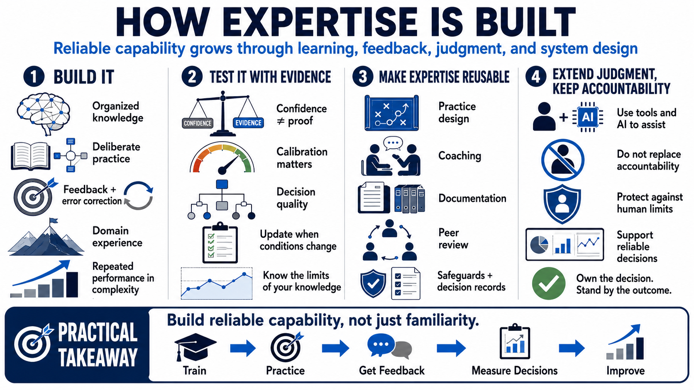

Course Summary and Key Takeaways
Connecting to LMS... Progress: in progress

Narration
Expertise is built through organized knowledge, deliberate practice, feedback, error correction, adaptable judgment, and domain-specific experience. Experts are not simply people who have spent more time near a topic. They are people whose perception, memory, decisions, and actions have been shaped by structured learning and real feedback. Their capability shows up in repeated performance, especially when the situation is complex.
The science of expertise also reminds us to separate confidence from evidence. Fluent explanation, reputation, and credentials may matter, but they are not enough by themselves. Reliable performance requires calibration, decision quality, and a willingness to update when the environment changes. Strong experts know where their knowledge applies, where it may not apply, and what support or review is needed in high-risk work.
For organizations, the goal is to build expertise that is visible, teachable, and reusable. That means designing practice, feedback, coaching, documentation, and tooling so that good judgment can spread. It also means protecting experts from predictable human limits through checklists, peer review, safeguards, and clear decision records. Expertise is strongest when skill and system design reinforce each other.
The practical takeaway is simple: build reliable capability, not just familiarity. Ask what strong performance looks like. Break the skill into trainable parts. Provide feedback before weak habits harden. Measure decision quality with evidence. Use tools and AI to extend judgment without replacing accountability. When those pieces come together, expertise becomes more than personal talent. It becomes a disciplined capability that can grow across people, teams, and time.